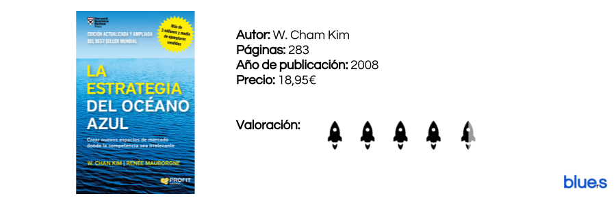

Océanos Azules
by Luis Morales
Publicado 16/02/2017

"No hay compañía ni grande ni pequeña, ni existente ni nueva, que pueda darse el lujo de arriesgarlo todo"
Antes de poder hablar de estrategias de innovación o de competencias, hay que leer La estrategia del océano azul. De verdad que nosotros nos acercamos a todos estos "santos griales" que son los libros de management con bastante cautela y a sabiendas que normalmente vamos a encontrarnos con una mierda.
Leer másAprendiendo de los mejores
by Luis Morales
Publicado 13/02/2017

Una herramienta fantástica que te puede abrir muchas puertas si estás dispuesto a ser curioso.
Nos encanta este libro y lo bien pensado que está. Se trata de una selección de citas célebres celebremente citadas por celebridades, y como no podía ser de otra manera, nosotros celebramos esta celebridad.
El libro está dispuesto en forma de secciones estanco y cada una de estas hace referencia a un personaje y a diez citas célebres seleccionadas y comentadas por el autor.
Padre Rico Padre Pobre
by Luis Morales
Publicado 10/02/2017

"Qué les enseñan los ricos a sus hijos acerca del dineno, ¡que las clases media y pobre no!"
Este es el cleim con el que el autor nos presenta el libro, y a decir verdad, es una frase bastante acertada para definir la filosofía y la energía con la que Robert T Kiyosaki afronta este ensayo. Clasismo en vena para los amantes del $, motivación Enron, dividendos, utilidades y millones muchos millones.
Leer másCategorías
En estos días, la bibliografía orientada al mundo del emprendimiento parece la gallina de los huevos de oro. Todo el mundo es experto y todas las instituciones creen saber el secreto del éxito.
Este Blog está creado por y para emprendedores, con el firme objetivo de separar la paja del grano y poner sobre la mesa aquellos libros que realmente creemos dignos de ser leídos y aquellas herramientas genuinamente valiosas para el emprendedor.